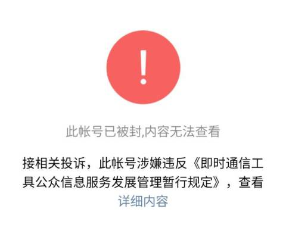
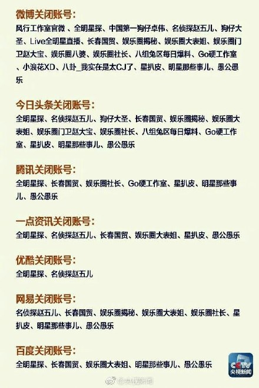
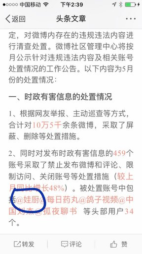
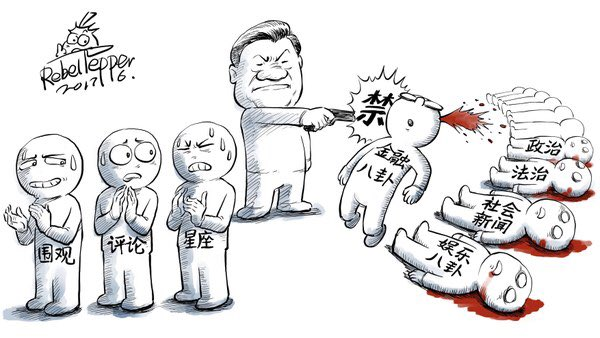
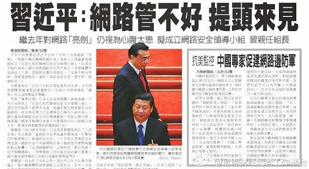
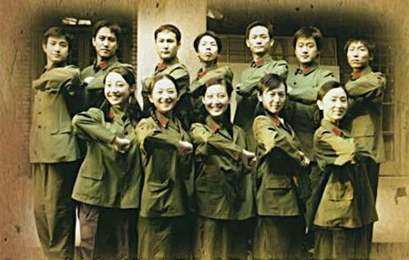
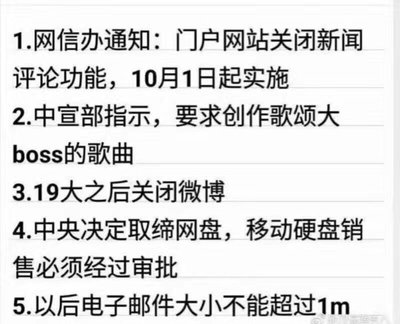
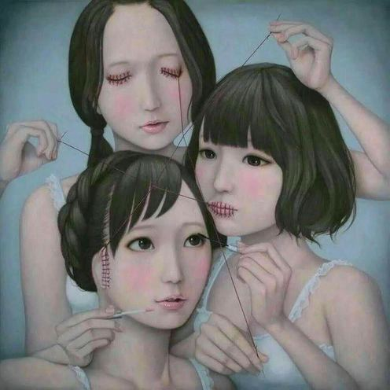
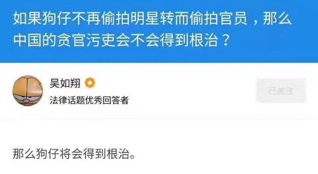

又有一段时间没有发《每周转载》了。近期郭文贵依旧火爆，有些读者建议俺再发一篇关于他的转载。但是俺觉得：上一篇《每周转载》已经聊过他，今天这篇该换个话题。
所以今天来聊一下：即使是娱乐圈也没能逃过真理部的毒手。
下面这首诗，曾经在本博客的第一篇政治博文中引用过，今天再重新贴出来。
================================
纳粹统治下的德国有一位新教牧师——马丁·尼莫拉（Martin Niemoller），曾经写过如下的经典诗句：
================================
很多墙内的网民对这次封号事件拍手称快。如果你也是其中之一，该想想这首诗背后的深意。

（今后大伙儿会越来越频繁地看到这个和谐标记）

（各个互联网平台被封杀的帐号）
《专三千：这一批账号被封 每个创作者都应该自危 @ 简书》
（编程随想注：此文发表于【墙内】网站，已经被和谐。下面是此文的节选。想看全文的，请猛击“中国数字时代的镜像”）
《闻所畏闻：论大V的原罪 @ 墙外楼》
（编程隨想注：下面是此文节选，粗体是俺标注滴）
《乔木：为何突然整肃网络娱乐 @ 东网》
（編程随想注：下面是此文节选，粗体是俺标注滴）
《张硕文：封杀八卦，从此“德艺双馨” @ 端传媒》
（編程隨想注：下面是此文节选，粗体是俺标注滴）
《艾未未：中国的审查制度是如何运行的 @ 纽约时报》
（编程随想注：本文作者艾未未是知名的艺术家，也是令朝廷很头疼的政治异议人士，下面是此文节选）
《卡纳：独立媒体的十四种死法——这是一场审查与反审查的战争 @ 十五言》
（編程随想注：此文发表于2015年，下面是此文节选）
《黄钟：纳粹德国是怎样控制舆论的 @ 炎黄春秋》
（编程随想注：这篇虽然发表于 2010年，但是很应景，于是也摘录到本文。下面是此文节选，引文中的括号是俺加的注）
《孔博士：在高速路上倒车，是一件很危险的事情》
（编程随想注：这篇比较短而且位于【墙内】，说不定哪天就被河蟹吃了，所以俺就【全文】摘录）
leebubaix1：
在消灭了“尖锐”批评之后，“温和”的批评就成了最刺耳的，也会被消灭掉；
在批评被消灭后，调侃又会无法容忍；
在声音都被消灭之后，沉默被视为无声的反抗；
接着就会要求赞美，然后再消灭那些赞美得不起劲的；
最后掌声无法停下来，因为先停止鼓掌的就会先被消灭掉。
賈葭：
封禅和封喉，往往同时发生。。。
賈葭：
十多年前开始做新闻，老板是一位新华社老前辈，经常说，我们是八仙桌下打猴拳，或者说，带着镣铐跳舞。
意即承认审查前提，然后做好业务。
如今，这猴拳打不下去了——八仙桌越来越矮，终于把弯着的腰砸断，蹬腿咽气，天下太平。
李幺傻：
听一出版界朋友说：目前掌管审核大权的某领导，对民国深恶痛绝，所以民国题材书一概不让出版。
我他妈的彻底醉了，举国出版听一个傻逼瞎指挥，这他妈的是21世纪吗？
（某匿名网友）：
有一个国家，在宪法中明文写着“民主”和“自由”。
但你如果在这个国家的大街上高喊“民主”、“自由”，立马被警察抓走。
GjitBUKYnKcyPRx：
这就是朝廷花高薪养的网监！封你的微信号！封你的微信群！
为什么要禁止言论自由？只有三个解释：
1、它过去做了坏事，怕人们提起；
2、它正在干坏事，怕人们批评；
3、它准备干坏事，怕人们揭露。
总之，禁止言论自由一定与坏事相关，绝对不是好事。
亮亮卢：
不只是防民之口，甚至要防民之心。
核心价值观，就是连价值观的多元都否认和不允许。//@牛老闯：防民之口 甚于防川
Tu6_MonicaEvana：
也就是说“背离社会主义核心价值观”是违法的咯？
接下来是不是要成立 Thought Police 支队了？
文涛：
以销号的方式剥夺言论自由并定期公示，为一部分非正常死亡的网民入殓，让他们活得快乐，死得其所。
充分显示了我国公共网络行政治理水平在人性化方面取得的巨大进步。

ForGeTcHe：
报纸越干净，社会则越肮脏；
电台越和谐，世道则越可怕；
电视越美好，生活则越难过；
电影越高尚，真实则越虚伪。
一个正常的社会，不是只许歌颂而不能反抗不公，不是只能感谢而不能批判问题；
越是掩饰则会越阴暗，越是粉饰则会越虚伪。
av69：
【经典网言】这世上有个奇怪的国度，人们从小就被强令学习政治，长大后却不能谈论政治……

diaominfazui：
探子报：百姓大骂纣王，怨声载道；
姜子牙：百姓敢骂，还有说话环境，商朝气数未尽；
多日后探子再报：骂纣声已不多；
姜子牙：还有人骂，则还有说话空间，仍未到伐纣之时。
又过多日，探子再报：商朝百姓鸦雀无声，已无骂纣之声！
姜子牙：百姓对纣王已绝望，不存幻想！即日举义伐纣……
商灭周兴。
挡车志士：
若禁言就可千秋万代，那现在该是秦朝；
若暴力可征服人心，那现在该是元朝。
苏联伟光正一夜崩塌。
焚书坑儒销兵天下，长城把全国圈起来也没挽救始皇千秋；
东西两厂鹰爪遍地，夷灭十族也没能拯救大明江山；
闭关锁国愚民至死，百万八旗也阻挡不了满清覆灭。
没有一个玉玺能保传万代，没有一种谎言能愚民百世！
秀才江湖：
在中国，人与人不平等，大多数情况是的；
但是有一点是平等的：封号面前，人人平等！
只要你惹得朝廷不高兴了，无论你是中国人还是外国人，无论你是教授还是主持人，无论你是娱乐八卦还是口诛笔伐，你会被封号。
就封号而言，人人平等在中国已经实现！
变态辣椒：

王俊：
雾霾禁评、法治禁评、民主禁评、宪政禁评、娱乐禁评、西方民主国家禁评、郭文贵更禁评......统称“习禁评”。
最后只剩党好、国好、制度好，完全等同于逼着民众为党口交，
完事后还要让CCTV问上一句：“你觉得生活幸福吗”？
这就是今天墙内社会言论环境的真实写照。糙吗？把更糙的留给党吧！
letos：
本来以为还有块遮羞布，现在遮羞布都扯掉了。

titaniumosolo：
习近平五年来的极左行为一下子得到了验证。
五年来在海外找民运在各大媒体塑造民主开明形象，甚至于说要集权再民主，看来不过是一场大忽悠。
民主，感觉真的成了擦脚布，需要的时候谁都在用，谁都拿来做幌子，用完了就扔。
天下苦共久矣！不知道要左到什么时候？
文涛：
生于五十年代的大院子弟 —— 21世纪中国的文化底漆
https://t.co/K0bNVxfJUl

李静睿的伊萨卡岛：
八卦号被封完全不吃惊，反正贵国做什么我是都无法吃惊了。
但看到那么多称它“大快人心”的评论还是很难过。
个体软弱，被强权剥夺自由没什么可耻的；
可耻的是，把自由拱手相让还拍手叫好。
这些人好像根本不知道自己失去的是什么。
犹太人也不是一夜之间抵达奥斯维辛的。
左宁右路：
不光有人觉得大快人心，还有好多觉得封的太少了。还有好多被放过了没封呢
璟大咩_hydra：
有人觉得那些账号恶俗无趣被封而拍手叫好，但问题是，谁是下一个？
66666六个6：
今天关的是你讨厌的，明天关的就是你喜欢的
你是萌物我不是：
“你不爱看”和“你不能看”是两回事，很多人分不清
一半似海水：
贵国的公权界限，你是不知道在哪里的，这才是恐怖的
半隐半世：
刀落到自己脖子之前，他们觉得刽子手砍头特别帅
梦醒大漠风依旧：
我只想知道：啥时候需要包住头脸，啥时候需要持戒，啥时候需要颂名，啥时候需要礼拜，啥时候需要集会礼拜，啥时候需要上战场。
红小帽子：
cj永远都是小心翼翼的言论，天天以自己又红又专三观正自居，周子瑜事件他严重站边某团拉拢他年纪又小又被洗脑的粉丝。
现在呢？你号呢？你被割喉的现下，谁来替你说话？
down_inflames：
最好笑的是八组爆料也好，cj也好，个个又红又专，还是落得如今这个下场……
回归初心爱子怡：
被封的这些号在政治站台上是紧跟某党的，可是狗腿子们以为自己是有尚方宝剑的。
其实人家只把狗腿子当枪用，看不顺眼了还是说杀便杀。
hugelf：
微博有个臭名昭著的五毛，叫“辟谣与真相”，它长年为暴政洗地，是个人都想弄死它。
不久前，它发帖称，“川普表示，北京镇压89暴乱展示了强大的力量。”
另辟蹊径，为64屠城洗地。
出乎意料，它的号被灭掉了。因为，中共害怕人们谈论那个“虚构事实”，洗地都不行。那是它们的棺材钉。
灭人器指南：
当一个反对者说：“我不会投向你那边的”。
我就平静地回答：“你的子女已经属于我们了，你算什么？你总是要死的。但是，你的后代已经站在新的阵营里。在不久之后，他们将不知道别的，而只知道这个新社会。”
——希特勒1933.11.6演讲
TualatriX：
看到很多人都在问「毒舌电影怎么了，这样也要被封？」，我觉得这才是最危险的思想：
这句话的言下之意是觉得这个不该被封，那难道其他的就该被封？
只要权力在那端，封什么都可以不经过你的认可。
piggyboxcn：
出国很多年后ex有一次说她不愿翻墙，因为“网上很多言论都是假的”。
我瞬间明白我们真的已经在两个世界了。
小札：
虽说是传言，但我看有可能。
放这消息出来可能是在试水，看看反应如何。这可能是未来舆论控制的大方向。
此外，中国有的地方已经进行公私合营试点，在公司里建立党支部。把私企绑在体制上，能够行得通？
教育政治化已经不可逆转。而私营企业政治化，一定会让已步履维艰的私营企业处境更为艰难。

法疆留痕：
这国出不了伏尔泰，斯大林却是比比皆是。
Chris Buckley 储百亮：

知乎：
问：如果狗仔不再偷拍明星，转而偷拍官员，那么中国的贪官污吏会不会得到根治？
最佳答案：那么狗仔将会得到根治！

舒天在线：
其实官场和娱乐场没有啥区别。
你今天爆娱乐场的料，明天就能爆官场的料；
你今天能偷拍明星，明天就能偷拍领导。
他们能不怕吗，他们能不关吗？
（某匿名网友）：
睡明星的不都是那些权贵嘛！整天报道哪个明星被哪个贝勒爷纳了二房，不立刻变成政治报道了？
政治风险太高所以中宣部禁了。
diaominfazui：
网络言论管制日趋收紧，大封杀如期蔓延至娱乐账号。
它们说，被关停的娱乐账号有两个特征：一是，炒作、低俗；二是，背离xxx义核心价值观。
我分析有两个目的：一，只能有一个声音。二，封掉反对声音还不够，赞美不积极的也不该存在。
akid：
研究了下被封的帐号，结论是，和帐号内容的关系没有设想的大，主要的原因是影响力大过真理部觉得安全的底线。
比如“严肃八卦”这个号，有一个同名高仿号都被干掉了，应该是点名要关，下面办事的人搞不清说的是哪个，干脆都封了。
九叔：
毒舌第二轮估值8亿，这周刚要close，确认的股东都在签协议阶段了。如果晚几天封，协议就都签完了，晚一个月封，工商变更完钱也都打过去了…
阿企：
不让说话有多可怕？不让媒体批评裆和衙门也就算了，连卓伟、风行这样敬业的狗仔队扒一些明星绯闻也要被网信办明令禁止。
要是说这背后没有利益关系，打死我也不信的。
以前是莫谈国事，现在是莫谈八卦，将来连谈情说爱估计都要被管起来吧。
佳哥说得对：
不是从行为上整顿娱乐圈，而是割掉说话的舌头。
小状师张：
那么，到底是定义低俗的权力被剥夺还是做一个低俗的人的权利也被剥夺更让人由衷地欢呼这盛世呢？
blogtd：
A：不明白为什么搞娱乐八卦的记者也会被微博删号…
B：你忘了近两任国母是干什么的吗？
尼古拉斯·赵四：
以后的娱乐八卦就是这样：
惊爆白百合陪睡之前一直背党章！！！
甄子丹台上演戏不忘按时缴纳党费！！！！！！
成龙号召娱乐圈党员坚持社会主义导向！！！！
歌儿献给最可爱的人---掏粪男孩慰问驻八大胡同副部级以上高干！！！！！！
夜郎国国师：
此时某已婚男明星发微信给一未婚女明星：今晚有空吗，老地方见，现在不怕了
wailon：
没想到，以后要看明星出轨新闻也要上推特了…
太后已乘仙鹤去：
成天依法依法，我想问依的哪条法啊？
MILK–不加咖啡：
为什么关停前可以不约谈？不警告？为什么不以法律手段关停？
如果他们全部真的是撒播谣言完全可以以法律手段来处理，不是早就规定了什么谣言转发过500入刑吗？
直接关停几个意思？越过了法律，是在藐视法律吗？
作为官媒还在这大放厥词说这样做合理，不打脸吗？
以主流媒体的强硬来抹杀言论自由这就是所谓
仝宗锦：
贵国在限制言论自由方面几乎是最为恣意的。
老百姓不能说政治性的也就罢了，如今连喜闻乐见的八卦也不能愉快的进行了。
然而，封杀这些八卦号不仅事关政治权利，同时也事关财产权利。
有没有八卦号想起诉有关方面啊？我愿意提供无偿代理。
阿企：
app说封还是照封啊，不经任何法律程序，想办你就办你，这种权力的傲慢和不受约束才是最可怕的！
很多人去讨论哪个号该不该封挺可笑也挺可悲的，极权主义专制的思维早已深入大部分人人的骨髓，上至官僚下至屁民都毫无法治概念，满脑子帝王统治阶级思想。
就算我不喜欢八卦，也不能堵住别人的嘴啊。
普鲁斯坦：
看评论说人家是造谣成性才被封。造谣轮不到国家来封，造谁的谣谁可以起诉。
脸书上那么多假新闻甚至影响了美国大选，当时奥巴马能把它们一次性封了吗？
还有人说因为这些账号不是自然人而是营利机构。媒体就没有言论自由了？更别说营利机构有更高的经济
遗落南境：
即便是三俗（问题是还不都是三俗），只要没有犯法，主管部门是不能……
算了算了
支持威武有希望 来生还被种花家 见祖流氓我放心 这盛世如你所愿！
增长增硬：
英国在1648年就已推翻了“批评政府有罪”这一不成文的法律。
这是否可说明——英国比中国先进4,5百年?
（编程随想注：
朝廷喉舌发了一篇《人民网评：“依法关停炒作账号”是一次正能量对负能量的胜利》。下面是网友对此的评论）
-晨晨他爹-：
以前有反革命罪，现在要不要加一条负能量罪呢？
兔兔几哒哟:
丁璇这种清朝老僵尸还在到处散毒敛财，郭抄抄这种人还在作协，普通人想看点八卦就是负能量了
沁小叶LU：
有句话是这么说的：天天充满正能量的人不是传销就是神经病。
现在这种做法和家长一味和你说“我都是为了你好”有什么区别？
堵可以，但更重要的是疏导，不疏导迟早爆发！
lovefromelderman：
官方出面封号是此事中最大的负能量
绵绵绵球：
狗仔是负能量还是被狗仔曝的那些人是负能量？你倒是说说清楚。
吃枣药丸！
石榴院子：
用了很多绝对性修饰语和道德评判的大词儿，不提关停的依据、来源、操作过程。
很熟悉的味道。
SoftsoftChen：
微博账号故障好多天发不出话，看到这个特意去申诉了把账号弄正常来骂一下。
关就关，干这些事也不是一次两次了。
但默默关了也好过如此厚颜无耻写文章夸自己，还拍手称快。拍手称快亡差不多！
我看的东西主不主流关你屁事！！！！娱乐账号是烂，但至少应该给人自己选择看或不看的权利吧？
臭不要脸的开倒车！
king_xccc：
想禁言就直接说，不用整这些虚头巴脑的呀。反正什么是正能量什么是负能量，你们说了算。
猫-锚-緢-渵：
正能量对负能量的胜利？要脸不要了？不用公权力强制关闭你能胜利？！
水果君：
还能不能药店碧莲？怎么不吃饭前直接背诵毛语录啊！！！
闪闪发光的豆子：
什么是正能量呢？看来是得人人手里拿本语录咯[微笑]
我这种负能量还有活路吗？
賈葭：
从明天开始我的个人公号“贾老师”发布的每一篇文章前面都会加一段按语：
大家好，我是富强、民主、文明、和谐、自由、平等、公正、法治、爱国、敬业、诚信、友善的贾老师。
yorkie幺柒：
权力的胜利而已，别什么都扯正能量，正能量已经被你们玩坏了
凯瑟琳街的酿酒狗：
超级烦某些娱乐公众号，跟狗屎一样恶心；但是这次有关部门的行动让我觉得，有关部门和狗屎也差不多了。
祝领导全家都正能量，结合最近综艺节目不许染发，突然意识到，我大清原来还没亡。
Mosen猫僧：
大象踩死只蚂蚁，高呼胜利
贤者群众：
卧槽，阿Q赢了！意外不意外？惊喜不惊喜？
傅小黑：
国家说你是负能量，你就是负能量。消灭你就是正能量战胜负能量。mdzz
723足球队：
还愣着干嘛，鼓掌啊
半坡游客：
依法鼓掌
袁腾飞：
你神九上天，你神280上天也没用！
你落后的根本是什么？是制度的落后！
你怎么干都没用，你整天嚷嚷跟国际接轨，你除了物价跟国际接轨，还有什么跟国际接轨？
你工资福利怎不接轨？三权分立怎不接轨？政治民主怎不接轨？
利于你们统治，就嚷嚷跟国际接轨，不利于你们统治，就嚷嚷坚持党的特色
文涛：
1980年刚上小学，《中国青年》有篇文章让我印象深刻：人生的道路呵，怎么越走越窄。
我作为八、九点钟的小太阳，对此颇不以为然。
37年后，人生的道路呵，四面都是悬崖。
zyykyb：
长夜才开始，黑暗中请记得太阳的模样，沉默中不要为魔鬼歌唱。
俺博客上，和本文相关的帖子（需翻墙）：
各种迹象显示——党国喉舌正逐渐失去舆论阵地
如何用互联网进行“反洗脑”和“政治启蒙”——分享若干个人经验
朝廷为何落入“塔西佗陷阱”？
每周转载：关于朝廷近期舆论和习近平的嘴脸
所以今天来聊一下：即使是娱乐圈也没能逃过真理部的毒手。
★写在前面的话
下面这首诗，曾经在本博客的第一篇政治博文中引用过，今天再重新贴出来。
================================
纳粹统治下的德国有一位新教牧师——马丁·尼莫拉（Martin Niemoller），曾经写过如下的经典诗句：
起初他们追杀共产党，我没有说话——因为我不是共产党；
后来他们追杀社民党，我没有说话——因为我不是社民党；
接著他们追杀工会成员，我没有说话——因为我不是工会成员；
此后他们追杀犹太人，我没有说话——因为我不是犹太人；
最后他们奔我而来，却再也没有人站起来为我说话了。
================================
很多墙内的网民对这次封号事件拍手称快。如果你也是其中之一，该想想这首诗背后的深意。
★被关闭的热门娱乐帐号
（今后大伙儿会越来越频繁地看到这个和谐标记）
（各个互联网平台被封杀的帐号）
★针对此事的评论文章
《专三千：这一批账号被封 每个创作者都应该自危 @ 简书》
（编程随想注：此文发表于【墙内】网站，已经被和谐。下面是此文的节选。想看全文的，请猛击“中国数字时代的镜像”）
1984从来就没有走远，老大哥永远在看着你，死死地看着你。老大哥让你用局域网，老大哥让你说话小心点，老大哥让你看这盛世如你所愿。
我能理解那些看到咪蒙被禁言后要去买鞭炮庆祝的人，因为咪蒙太大了，她太成功了，而且她还耍流氓，她还公然开车，所以禁言她，禁得好。
我能理解那些看到卓伟被封号后弹冠相庆的人，因为卓伟不要脸，没有证据瞎造谣，有了证据敲诈明星公关费。
被封的很多账号和我的三观并不符，被封的很多账号确实是垃圾，被封的大部分账号我从来不看，但我誓死捍卫他们说话的权利。
我不能理解同为自媒体从业者的人，为什么能够说出：“这是咱们踏踏实实写文章人们的福音。”这种话。
您的耳朵就这么不好使，非要在咪蒙被禁言了之后才能听到福音？
去看看咪蒙公众号的禁言公告，她是违反了一个叫《即时通讯工具公众信息服务发展管理暂行规定》的东西，是一个“规定”，还是“暂行”的。
是一个“规定”就说明我改起来很方便，但是你得遵守；“暂行”就是告诉你，我高兴我随时都可以改。
你以为你老老实实写文，你以为你写得安分守己，在一个随时可以变更的“暂行规定”面前，你走的任何一步都可能踩进禁区。
这是一场力量悬殊的博弈，如果有人要给你走过的所有路画边界，就算你现在走在边界里，还是会有一大堆以前的脚印在边界外头。
众公众号被封，很多人不知道这意味着什么，这意味着所有的靠公众号发家的自媒体，从今天开始就把脑袋别在腾讯的裤腰带上过日子了。
......
我想起了1966，我想起了51年前的老舍先生。
为了紧跟时代的要求，老舍晚年已经不再写那些看了会让人发笑的小说，或者那些能让人感动的作品，甚至老舍觉得《骆驼祥子》里的祥子有“丑化劳动人民”之嫌。为紧跟意识形势,老舍再版《骆驼祥子》时，把结尾统统删去了。
然而，就是这位传闻要获得诺贝尔文学家的作家，就是这位写出过《四世同堂》的大文豪，他生前发表的最后一篇作品是一篇快板书《陈各庄上养猪多》，节选一段大家感受一下：
－－－－－－－－－－－－－－－－
新中国，万象新，打起竹板，唱唱新农村。
新农村，真方便，
一来来到北京东北的顺义县。
顺义县，好风光，
渠水浇田稻麦香。
好光景，说不完，
雄心壮志，庄稼增产赶江南。
说不完，咱们挑着说，介绍介绍陈各庄上养猪多。
－－－－－－－－－－－－－－－－
就是到了这种地步，紧跟社会时代潮流到了这种地步的老舍先生，在1966年8月24日凌晨，在文庙接受完革命小将的批斗后，缓缓地走出生活了16年的百花小院，来到德胜门外城西北角上的太平湖，在太平湖边坐了整整一天和大半个夜晚，投湖自尽。
激烈的批评被消灭了，他们再来消灭温和的批评；
等到温和的批评都没有的时候，他们就消灭那些保持独立不赞美的人了；
到最后，如果鼓掌不起劲，都会被消灭。
——《动物庄园》
《闻所畏闻：论大V的原罪 @ 墙外楼》
（编程隨想注：下面是此文节选，粗体是俺标注滴）
一度有人把娱乐看正准正能量，看成正能量的第二道防线呢。因为管制的对象毕竟是活人，活人的颈部以上管住了，腰部以下就应该放开，否则，活人的血气还得往颈部以上冲。而且，当人们沉湎于低级趣味，就像我们的领导干部那样，除了革命工作，就忙点小三小四，就成为社会主义革命的可靠力量，有什么不好呢。平民百姓没有公款可花，只能过朴素的生活，因地制宜地看点网络三俗（中国官方管制的媒体，广播电视和网络上的娱乐，确实足够低级），免得追求公平公正，岂不大大地有利于中特主义之稳定发展吗。
但是这都是幼稚的想法。大号的原罪不在于其过去做了什么而长大，而在于其大。因为你长成了大号以后，实际上什么都可以做，并没有人规定你只能发娱乐和愚蠢的消息，你转过头来追求社会公正，就是一个公知大号。还有一项让人忧虑的是，娱乐大号的主人可能真的不懂什么是言论危险，反而可能懵懵懂懂地发出反革命舆论。例如，一个从来不过问国家大事，也基本不评论强拆和上访的网友写了一个评论消灭娱乐大号的帖子叫《低俗是基本人权》，作者才开了一个公号，写得比较认真一点，作者以为评论娱乐事件总是安全的，结果刚转出来就没有基本人权——删了。这说明不知道什么是敏感的人，有可能一出手就摸到敏感部位。假设它是一个不辨感到的大号，偶尔犯一下这样的错误，那可怎么得了。
......
可以猜想，当年的谷歌即便在中国真心的只做娱乐八卦，也不会让它活着走出来。这不是娱乐八卦本身的问题，而是你成为大号就是问题。同样，当我看到大量的城市青年，包括小镇青年都在手机上安装优步APP时，就预言了优步中国公司很快就会垮台。不错，你现在还只是一个打车软件，但是，既然你发布一个小贴士，一句小笑话，都会在一瞬间传达到数千万，乃至上亿青年面前，这是多大的隐患！你这么有影响力，你就临死不远了。当然，它最后的结果不是谷歌似的被赶出去，而是就地投降，缴枪不杀，被模仿它的滴滴就地消化，滴滴赢得比百度对谷歌还漂亮，到现在成为一个一家独大的垄断公司，一个打车软件就成了加价平台，正符合讲好中国故事的逻辑。
归根结蒂，只要你像小草一样默默地存在，你可以苟全性命于乱世。当你开始有一点影响的那一天，就是你的死期。你追求影响的过程，就是你找死的过程。所以，问题不在于你是不是低俗，关键是你有没有影响力，也就是有没有粉丝。影响力的真正秘密，在于它是国有资产，不能归个人所有。也就是除了他们，你不能有粉丝。所以影响力就是原罪。除非你把个人练成的影响力献给国家，如果国家需要的话。但反过来，如果国家需要，你不献也得献。
《乔木：为何突然整肃网络娱乐 @ 东网》
（編程随想注：下面是此文节选，粗体是俺标注滴）
整肃网络娱乐，也是前几年禁网运动、抓大V的继续。那时的当务之急是消除政治上不同声音，重点是收拾公知，让人们不敢妄议时政。经过这几年越来越严的网络屏蔽、删贴封号，社交媒体上基本都是娱乐八卦、吃喝玩乐、商业营销了。但只要网络在，只要它存在开放多元的可能，不像党报官媒一样被当局完全掌控，就觉得不安全、不放心，要不断整顿。
在政治言论之后，自然就是娱乐新闻了。各种段子的流行，对体制、官员各种变相的调侃、取笑、嘲弄，对政治颠覆性、娱乐化的解构，其实逐渐在消除人们对政治的敬畏，对政客的尊崇，对权力的恐惧。从许多国家的社会转型来看，并没有发生武装斗争和暴力革命，后极权往往不是被推翻的，而是被笑翻的。当政治说教、政客表演，像皇帝的新装一样让人发笑，就会有相应的不信、不满、不怕。变化因之而来。
整肃娱乐新闻，还有更大的意识形态需要。改革开放三十多年，正统共产主义意识形态和苦行僧的生活方式，本来早已淡化不提，但是这几年随着政治的变化，似乎又在回归。官方重提共产主义理想、长征精神、确保红色江山永不变色、红色基因代代相传，伴随着这些意识形态的联想，就是过去熟悉的艰苦奋斗、斗资批修，自己不茍言笑，满脸阶级斗争，也不容许别人享乐放松，生怕丧失革命斗志，腐化变质。
对于娱乐八卦，会有不同的道德评判，但法律上它是言论自由的一部分，生活中更是老百姓喜闻乐见的东西。谁不喜欢可以不听不看，就像很多人从不看新闻联播一样。本来各行其道，现在强行干预，除了权力的蛮横，也很让人怀疑它的效果和持久性。全民娱乐的时代，官员也是人，哪个领导能幸免？在台上的不知道，落台的哪一个不是贪财好色、夜夜笙歌？
也有人对当局整肃娱乐拍手称快，或事不关己看热闹。看看各国历史，反对不行，沉默也不行，沉默就是无声的抗议。娱乐也不行，娱乐就是对权力的不敬。只有称颂，称颂声音小的、姿势不优美的，也不行。先是迫害犹太人，最后事不关己的其他人，都进了奥斯维辛集中营。一部分人、一种权利被侵犯，其他人、其他权利能保乎？
《张硕文：封杀八卦，从此“德艺双馨” @ 端传媒》
（編程隨想注：下面是此文节选，粗体是俺标注滴）
习近平政府上任前，广电总局多只针对个别实例管理：某些事件热度过高，然后会变成敏感词，消失于网络大海。习改变策略，多次公开提出，网络尺度和现实尺度必须一致，网络审查和现实审查都要严格。
习近平2016年曾点评过新闻舆论事宜，他说不仅党报党刊，电台电视台要讲导向，都市类报刊，新媒体也要讲导向；时政新闻要讲导向，娱乐类，社会类新闻也要讲导向。几天之后，中央电视台立即表态“央视姓党”。过半年，中国国家新闻出版广电总局发文整顿直播视频服务，要求主播必须发布健康向上的直播内容。另一边，要求加强娱乐类，社会类新闻节目管理。又过半年之后，娱乐自媒体的崩塌终于出现。
习政府从不吝于表现控制欲，民众却依然一再低估这样的控制欲。即便出于道德约束，中国的娱乐八卦终于成为一种政治。它不是涉及领土话题，不是涉及身份认同的政治，甚至不是意识形态，思辨交锋的政治。红男绿女成了政治，在两耳不闻窗外事的国度，情欲和物欲变成了政治，窥探与好奇也变成了政治。
一边是政府的自满，一边是民众的天真。大家以为网络会让世界就此一分为二，寄望网络可以收容现实中国不能谈论，不能观看的一切。这眼看落空了。如今纵情声色也不可以，网络不再是避难所，它依然逃不过权力和政治的约束。这约束精确到每一面，每一句，每一口呼吸。在每一次约束收紧时，中国网民都会大吃一惊，难以置信，随后就安然无恙，不了了之。甚者，不少网民说“封得好”，他们支持这样的道德净化。让人怀疑那是时代的“进步”，还是传统的牢固。又或者，他们希望自己获得特权，而自己的对立面被专制。施展特权的一方从不孤独，他们不断有新的更年轻的“力量”加入，不断更新生长。据说广电今后还会约束更多网络内容，甚至外国电影进入中国市场的删减片段也会被禁止发布。
★关于真理部的评论文章
《艾未未：中国的审查制度是如何运行的 @ 纽约时报》
（编程随想注：本文作者艾未未是知名的艺术家，也是令朝廷很头疼的政治异议人士，下面是此文节选）
审查制度的危害不仅令知识生活变得贫瘠，还从根本上扭曲了理解自然和精神世界的理性秩序。审查制度依赖于剥夺一个人为维持独立存在所需的自我认知。它切断了人们通往独立与幸福的道路。
言论审查剥夺了人们选择接受什么的自由，以及向他人表达什么的自由，这不可避免地导致人们的沮丧。在任何地方，一旦恐惧占据支配地位，真正的幸福就会消失，个人的意志力也会枯竭。判断变得扭曲，理性本身则开始渐渐远离。群体行为可能会变得疯狂、失常而且暴力。
每当国家对信息进行控制或封堵的时候，它不仅是在重申自己手中的绝对权力；也在引导它所统治的人民自愿服从体制，认可国家统治。反过来又支持低劣者的格言：用顺从换取实惠。
要想适应审查制度，最简便优雅的方式就是进行自我审查。这是与权力结盟、为利益交换创造舞台的最佳途径。为获得一点小小的乐趣便向权力卑躬屈膝，这看似微不足道；但是假如没有这种做法，审查制度的残酷打击便不可能成为现实。
对于接受这种被动地位的人来说，“得过且过”成了至高无上的价值。他们微笑、鞠躬、点头，这样的行为通常可以实现省心、舒适甚至愉快的生活方式。对他们来说，这种态度在本质上是防御性的。显然，在任何争议之中，如果一方无法发声，另一方的言论就会变成天经地义。
这就是我们中国的情况：自我沉默的大多数与强大政权的奉承者，对于像我这种直言不讳的人，他们的怨恨格外苦涩，因为这些人知道，他们的堕落是咎由自取。因此，自我防卫也变成一种了自我安慰。
《卡纳：独立媒体的十四种死法——这是一场审查与反审查的战争 @ 十五言》
（編程随想注：此文发表于2015年，下面是此文节选）
这里对独立媒体的定义很简单。没有主管主办单位、不接受官方直接审查的媒体。
从80年代的民刊，到现在的公号，都包含其中。
审查与反审查，道高一尺魔高一丈，步步升级。
谁都很难预测，下一波的主战场究竟会在哪里。
（注：具体讨论之前，先划一个范围。
中国的宪法刑法，对言论自由划定了禁区。如煽颠、侮辱诽谤、仇恨言论、淫秽色情、国家秘密等。无论什么形式的言论，触及到这些黑线，都有专门的刑律伺候。至于这些模糊且宽泛的禁区本身的合理性，很值得讨论。例如对国家秘密的界定，仇恨言论中宗教自由与言论自由的冲突，又例如淫秽色情信息的分级制度等等。
本文姑且先将这些都抛开。只说那些内容在禁区外的独立言论。）
－－－－－－－－－－－－－－－－
首先回到传统媒体时代。
图书报刊杂志，广播电影电视。
常见的独立媒体，大多是出版物——独立电台电视台成本高，技术门槛高，办办杂志，印点小书，简单省事。
从80年代的地下诗刊，到现在文艺青年们精心装桢设计的独立杂志，小规模搞搞当然没事，影响大一点，麻烦就来了。
死法一：非法出版物
首先面临的第一种死法，自然是非法出版物。
《出版管理条例》要求所有出版物都必须通过出版单位出版。所谓出版单位，必须要有版署认可的主办主管单位。所谓主办主管单位，无非各种党政机关事业单位人民团体。（《出版管理条例》，A9，A11）
绕开这些审批的独立出版物，不管具体内容是啥，都是非法出版物。
轻则没收取缔罚款（《出版管理条例》，A61），重则刑罚伺候：非法经营罪（《出版管理条例》，A61，《刑法》，A225）。
什么叫重呢？
三个判断标准：一个是你卖了多少钱（个人起点五万），或者是你赚了多少钱（个人起点两万），再或者是你没赚没卖，但印了不少（报纸杂志个人起点5000，图书个人起点2000）。（《关于审理非法出版物刑事案件具体应用法律若干问题的解释》，A11，A12，A13）
甚至，你没赚没卖，印来免费送也没印够2000、5000的门槛——但是你两年内因为乱印免费报刊杂志已经被罚过两次，或者你的图书杂志造成了“恶劣社会影响”或“其他严重后果”。（《关于审理非法出版物刑事案件具体应用法律若干问题的解释》，A14）
死法二：伪装成内刊了，你还是非法出版物
所以……听上去都挺吓人的。
聪明一点的独立媒体人，要准备出版点啥的时候，都不可能裸出。
最不济的，一定会找个单位挂靠，成为该单位的“内部出版物”。
内部资料，免费发放。
小打小闹可以，动静搞大了一点，一样作死。
即便内部资料，按照规定，也是要申请准印证的。（《内部资料性出版物管理办法》，A3）
事实上，没有准印证的内部刊物多如牛毛。真要被盯上，按照98年的《内部资料性出版物管理办法》，无非就是警告，最多罚三万块钱。（《内部资料性出版物管理办法》1998年版）
但2015年4月，上面这个管理办法修改了，一下子加了个真家伙：没有准印证，顶着“内部资料”之名，或对外发放、或内容超出了“内部交流”范围，一样会被鉴定成非法出版物，达到了上面所说的“情节严重”的标准，一样有可能会被指控为非法经营罪。（《内部资料性出版物管理办法》2015年版，A22）
反正大家都没准印证，选择性执法轮到谁就是谁。
类似案例真是数不胜数呢。有的是内容敏了感，有的树大招了风，有的就想整整这些人又找不到借口，谁叫你没事印点经济民生研究报告免费到处发，非法经营罪不就正好用上了。
死法三：莫名被墙
幸好，互联网时代来临。言论垄断遭遇到第一次绝对性地挑战。
印书不能随便印，网站总是人人都可以做的。
那么，网站服务器设在哪里呢？
设在境外——那就首先面临防火墙的问题咯。即便你自我感觉内容健康积极和谐向上，但说墙你就墙你，一点理由都不用讲。最新的案例，如参差计划。
死法四：生都不许生，还让人怎么死
设在境内，首先是内容的限制。
如果你想在境内办个独立网站，是不能涉及“时政类新闻信息“的。什么是”时政类新闻信息“呢？包括有关政治、经济、军事、外交等社会公共事务的报道、评论，以及有关社会突发事件的报道、评论（《互联网新闻信息服务管理规定》）。范围何其广。有关社会公共事务的讨论，一下子就被垄断起来了。
如果想做个和“时政类新闻信息”相关的网站，两个条件：
一个你本身就是新闻单位，所谓传统媒体办网站；
二个你是互联网大土豪：干了两年以上的网络信息服务，注册资本不低于1000万，雇了持证上岗的专职新闻编辑人员。即便如此，你也只能转载别人写好的稿子，没有自采权。（《互联网新闻信息服务管理规定》，A8，A16）
死法五：老大哥时刻看着你，让你提心吊胆，生不如死
那如果绕开“时政类新闻信息”搞个普通网站呢？
经营性的网站要申请审批，非经营的要备案，备案了要年检。（《互联网信息管理服务办法》，《非经营性互联网信息服务备案管理办法》）
既然登记在老大哥系统里了，那肯定也就随时都能好好盯着你了。
做个网站这么麻烦？没关系，自媒体时代来了呀。在社交媒体平台上注册个账号，人人都是独立运营者。
从 BBS，到博客，到 SNS，到微博，再到微信。
不同的平台更迭，不断满足人们不同的信息需要。BBS 提供广场言论空间；博客完善个人写作与作品展示体验；SNS 继续补充社交功能，并将过去的主动访问导向被动推送；微博用“单向关注”弥补 SNS 圈子文化中原创信息不足的问题；微信最后成为集大成者：用朋友圈对 SNS 的进行大规模简化，又用公众号实现原创信息的展示共享。
尤其有了微信公共平台后，专业化的自媒体在此蓬勃生长，且长势喜人。
死法六：再次被墙
当然，无论哪个平台，都绕不开审查的问题。
如果是在境外的平台——信息数据不接受当局的审查备案？当然直接墙之。
死法七至九：小秘书审死你（禁言，删帖，销号）
境内平台？那就是我们大家都熟悉的故事了。
平台那么多，用户那么多，怎么审查呢？
直接审查和间接审查，双管齐下。
最主要的，是间接审查：将审查的责任移交到平台手中。
间接审查最大的问题，是导致各个平台的过度审查。宁枉一万，不漏一个。漏一个，责任就该平台承担呢。轻则“责令改正”或罚款，重则停业整顿关闭网站，搞不好还要追究刑事责任。（《互联网信息管理服务办法》，A20）
平台审查，有三大法宝：
一是事前审查（《计算机信息网络国际联网安全保护管理办法》，A10.4）——禁止内容发布。一个一个看不过来，那设关键词咯。重点人群重点关注，机检之外再人工手检。
二是事后审查（《计算机信息网络国际联网安全保护管理办法》，A10.7）——删帖、销号。发现一个，消灭一个。
三是记录备案（《计算机信息网络国际联网安全保护管理办法》，A10.6，A16，《互联网信息服务管理办法》，A14，互联网电子公告服务管理规定》，A13，A14，A15，《即时通信工具公众信息服务发展管理暂行规定》，A6）。用户的身份信息，上网信息，悉数记录。国家机关依法查询时，无条件配合，一律“予以提供”。
死法十和十一：诽谤罪，寻衅滋事罪
在微博兴起后，信息传播速度和信息量激增。小伙伴们脑洞大开，变更关键词、长微博，绕开机检。新账号注册成本又低，删我一个号，千千万万个号站起来。平台审查虽说力度越来越大，其实也是力不从心。
所以有关部门就需要亲自出手了。平台审查的基础上，再加上对用户的直接审查和惩罚。
厉害的是2013年的转发500次的司法解释。（《人民法院、最高检察院关于办理利用信息网络实施诽谤等刑事案件的司法解释》）
诽谤他人，5000个人看了，500个人转了，就又可能是诽谤罪。
在网上侮辱恐吓他人、故意传谣、起哄闹事，那有可能治你寻衅滋事罪。
诽谤、恐吓、谣言，都该如何认定？刑法还是个严肃的东西。主观心态，客观条件，罪刑相当，都要考虑。尽管最后不见得能过司法一关被治罪，但先拘你十天半个月甚至一年多，上个央视哭个鼻子，效果也就达到了。
死法十二：想起来又不让你生了
微博大V被这个司法解释一治，社区活跃度大幅度下降。
意见领袖们都转移到了公号平台上，还越做越专业，越来越成体系化、组织化。
发现对时政信息的掌握有些失控？没关系，又想起了当年治网站的办法：普通账号不得妄议时政。
根据2014年的微信十条，从事公众信息服务的公号，要通过平台到主管部门备案。传统媒体开的公号可以发布时政类新闻，有新闻信息服务资质的普通网站可以转载。其他公号，则需经“批准”，才能发布转载时政新闻。（《即时通信工具公众信息服务发展管理暂行规定》，A7，A8）
至于什么是时政新闻，和上面的定义一样：有关政治、经济、军事、外交等社会公共事务的报道、评论，以及有关社会突发事件的报道、评论。
但是不是举目一望，搞时评谈时政的公号还是一把一把的？没关系，选择性执法就是需要这样的条件才行呀。
死法十三：封锁外链
不过，要规避微信平台的审查，似乎也不难。
大家很快就发现了一招：外链。
将看起来可能会被审查的内容放在不被审查，或者说不被那么严苛审查的空间里，再将连接放回微信公号，利用公号的推送功能进行推广。
问题是，有这样一个不被审查，或者说不被那么严苛审查的空间吗？
答案是有的。
例如云储存的空间。如印象笔记。
人家印象笔记说了，你的数据，就是你的（Your Data is Yours，Your Data is Protected，Your Data is Portable）。托管在这里，印象笔记不会对你进行事前审查。
没有事前审查，不代表没有事后删除。印象笔记进入中国后，承诺遵守中国法律。中国的法律如何界定呢？除了宪法刑法划定的言论禁区，还有“含有法律、行政法规不时禁止的任何其他内容的”。（印象笔记服务协议，A11）
“不时禁止”，对中国真是了解呢。
不过，没有事前审查这一项，就已经让小伙伴们很感激了。大家纷纷涌上印象笔记分享链接。
结果，人家中国版的印象笔记就直接把链接共享的功能给关闭了。
没关系，中国版不能用，国际版的还能用。虽说读取速度慢了点，总还能打开。
结果，人家腾讯就直接把你外链给关闭了。
死法十四：app被下架
这当然还不是战争的尽头。
在 PC 网络时代，独立的门户形式，是网站。那移动网络时代呢？自然就是各种移动终端、APP 应用了呗。
不让我自由办网站，我在别人办的平台网站上设账户发信息也处处被审查，那我自己开发一个 APP 专门提供原创或者精选读物，可以吗？然后我再用外链，把放在 APP 的内容推广到微信平台，不就又解决了传播渠道的问题咯？
喂，刚才不是说了吗，想用外链，说封你就封你了嘛。
那不用外链，就在朋友圈微博上分享，传播速度也远远高于独立的终端吧。
好主意呀。要知道，当前还没有专门针对移动终端的内容审查规定，所剩不多的审查盲区。
但一个问题是，这个终端本身，要推广吗？
你是准备放在苹果安卓的市场上推广？自己搞个专卖店网站？还是放在什么社交网站的平台上供下载？
不管放在社交网站还是独立网站上，上面说到的审查问题，一个也避免不了。苹果安卓的市场也要尊重中国法律，对你进行内容审查，一旦不“符合中国的法律规定”，该下架的还得下架。（App Store Review Guidelines, A22.1）
对了，app 的审查也不是真没盲区，人家工信部已经在制定规则了，当前也可以“参照”互联网网站的管理方法时不时搞一轮整治运动呢。
★一些含沙射影的评论文章
《黄钟：纳粹德国是怎样控制舆论的 @ 炎黄春秋》
（编程随想注：这篇虽然发表于 2010年，但是很应景，于是也摘录到本文。下面是此文节选，引文中的括号是俺加的注）
1940年5月10日，丘吉尔出任英国首相。戈培尔（纳粹宣传部长）指使部属：“在口头上和图画中，应该把邱吉尔介绍成是英国人民的典型：一个品行不端、龇牙咧嘴的家伙，长着类人猿一样的前额，是制造谎言的嗜酒狂，总是与有钱人、犹太人、布尔什维克人为伍，将工人踩在脚下……”这样炮制和筛选出来的消息除了可以误导德国人之外，还有什么用呢？
而国外到底是怎么回事，比如人家是怎么看待希特勒德国的，这类的信息是否可以传播，以怎样的形式传播等等，都是纳粹当局说了算。1940年11月11日，罗斯福的停战日演说在德国被严禁播放。夏伊勒在这一天的日记里写道：“希特勒说的每一句话我们都会在全美国播放，但是罗斯福的讲话德国人却一个字也听不到。这是民主的一个弱点，我想；不过也有人认为这正是民主力量之所在。”
俗话说，不怕不识货，只怕货比货，可现在就第三帝国的新闻报道而言，只有纳粹党一家在王婆卖瓜了，她想怎么夸就怎么夸。英国驻柏林大使内维尔·安德森爵士曾这样评价过戈培尔：“对他来说，没有什么胆汁是太苦的，没有什么谎言是太过于明目张胆的。”
这话不错。1938年11月的水晶之夜是德国犹太人的噩梦，可是过后，戈培尔却信誓旦旦地声称：
“关于所谓洗劫和捣毁犹太人财产的一切说法，都是令人厌恶的谎言，我们没有动过犹太人的一根汗毛。”
也许有人会说，世上哪有诚实的政客？但第三帝国可能跟美国英国有所不同，罗斯福的一句话可能招来一万句的反驳，而戈培尔和纳粹党睁着眼睛说瞎话，没有哪家德国报纸电台可以唱反调戳破它。
......
为了更好地蒙人，纳粹德国有一套冠冕堂皇的说辞。比如，对于隐瞒和掩盖真相的一个理由就是，如果如实地公开披露，会损害国家的威望，为英法等西方国家提供了攻击德国的口实。
哪家报纸公开披露第三帝国的阴暗面，那就是为反对德国的敌人提供宣传资料。当然，人们接受这种论调的原因，恐怕也有希望什么都不知道的心理在作祟，因为这样就可以免去了良心上的不安，免去了真相所带来的心理压力。
家丑不准外扬的另一面，一定是家丑也不准内扬，通过实行严厉的新闻出版管制，尽可能把更多国民蒙在鼓里。要不然，《柏林日报》可以自由报道和评论的话，外国人不也照样可以获知，从而家丑不也就外扬了么？
同样地，面对境外的批评，纳粹的行话称之为“恶意宣传”。于是，第三帝国就出现了这样一种现象，那些并不是纳粹分子的德国人，却在起劲地捍卫纳粹的言行，反对别人的批评。他们认为，对纳粹的抨击就是对德国的抨击。作为一个德国人，他们“感情”上接受不了，揭露和批评德国这样那样的问题就是伤害他们的“感情”。
《孔博士：在高速路上倒车，是一件很危险的事情》
（编程随想注：这篇比较短而且位于【墙内】，说不定哪天就被河蟹吃了，所以俺就【全文】摘录）
近年来，在高速路上开倒车的行为越来越多。尽管全社会都已经形成共识，开倒车极为危险，但此类行为依然屡禁不止。
高速路上倒车，与其他车辆行驶方向完全相反，属于逆流而动。一旦与正向行驶的车辆相撞，往往会发生车毁人亡的结果。因此，高速路上倒车不但不能保证安全到达目的地，反而系统升高了整个车辆的风险，必须高度警惕。
在高速路上错过正确出口是很常见的事。一旦发生，不要惊慌，顺着高速路继续往下开，寻找下一个出口即可。尽管路程可能会更长，花费的时间可能会更多，但终归是安全的，也是对全车乘客负责任的。
需要警惕的是，因为在高速路上倒车是明显违法的，所以绝大多数司机都不会一边倒车，一边提示“倒车，请注意”，而是会试图向乘客说明再往前走是不对的，是邪路、错路而非正确道路，这个时候，乘客应当有足够的警惕。
当然，司机是否会选择开倒车，跟他的专业素养没有必然联系。很多进过驾校、接受过系统学习、具有几十年驾龄的老司机一样会选择开倒车，其原因多种多样：有可能出于客运公司领导的要求，有可能是司机本人要赶着去开会，也有可能是没有对开倒车的危险做出充分的预料。但无论如何，开倒车都是一件非常危险的事情。
因此，倘若在你乘坐的车上，司机准备开倒车，你应该及时发声制止。不要觉得事不关己——覆巢之下，安有完卵。最重要的是，你绝对不能为了眼前的一点利益，觉得能够节省时间而添油加醋、助纣为虐，怂恿司机倒行逆施。
毕竟在一辆高速行驶的车上，你是乘客，而非看客。
★关于“言论审查”的网友评论
leebubaix1：
在消灭了“尖锐”批评之后，“温和”的批评就成了最刺耳的，也会被消灭掉；
在批评被消灭后，调侃又会无法容忍；
在声音都被消灭之后，沉默被视为无声的反抗；
接着就会要求赞美，然后再消灭那些赞美得不起劲的；
最后掌声无法停下来，因为先停止鼓掌的就会先被消灭掉。
賈葭：
封禅和封喉，往往同时发生。。。
賈葭：
十多年前开始做新闻，老板是一位新华社老前辈，经常说，我们是八仙桌下打猴拳，或者说，带着镣铐跳舞。
意即承认审查前提，然后做好业务。
如今，这猴拳打不下去了——八仙桌越来越矮，终于把弯着的腰砸断，蹬腿咽气，天下太平。
李幺傻：
听一出版界朋友说：目前掌管审核大权的某领导，对民国深恶痛绝，所以民国题材书一概不让出版。
我他妈的彻底醉了，举国出版听一个傻逼瞎指挥，这他妈的是21世纪吗？
（某匿名网友）：
有一个国家，在宪法中明文写着“民主”和“自由”。
但你如果在这个国家的大街上高喊“民主”、“自由”，立马被警察抓走。
GjitBUKYnKcyPRx：
这就是朝廷花高薪养的网监！封你的微信号！封你的微信群！
为什么要禁止言论自由？只有三个解释：
1、它过去做了坏事，怕人们提起；
2、它正在干坏事，怕人们批评；
3、它准备干坏事，怕人们揭露。
总之，禁止言论自由一定与坏事相关，绝对不是好事。
亮亮卢：
不只是防民之口，甚至要防民之心。
核心价值观，就是连价值观的多元都否认和不允许。//@牛老闯：防民之口 甚于防川
Tu6_MonicaEvana：
也就是说“背离社会主义核心价值观”是违法的咯？
接下来是不是要成立 Thought Police 支队了？
文涛：
以销号的方式剥夺言论自由并定期公示，为一部分非正常死亡的网民入殓，让他们活得快乐，死得其所。
充分显示了我国公共网络行政治理水平在人性化方面取得的巨大进步。
ForGeTcHe：
报纸越干净，社会则越肮脏；
电台越和谐，世道则越可怕；
电视越美好，生活则越难过；
电影越高尚，真实则越虚伪。
一个正常的社会，不是只许歌颂而不能反抗不公，不是只能感谢而不能批判问题；
越是掩饰则会越阴暗，越是粉饰则会越虚伪。
av69：
【经典网言】这世上有个奇怪的国度，人们从小就被强令学习政治，长大后却不能谈论政治……
diaominfazui：
探子报：百姓大骂纣王，怨声载道；
姜子牙：百姓敢骂，还有说话环境，商朝气数未尽；
多日后探子再报：骂纣声已不多；
姜子牙：还有人骂，则还有说话空间，仍未到伐纣之时。
又过多日，探子再报：商朝百姓鸦雀无声，已无骂纣之声！
姜子牙：百姓对纣王已绝望，不存幻想！即日举义伐纣……
商灭周兴。
挡车志士：
若禁言就可千秋万代，那现在该是秦朝；
若暴力可征服人心，那现在该是元朝。
苏联伟光正一夜崩塌。
焚书坑儒销兵天下，长城把全国圈起来也没挽救始皇千秋；
东西两厂鹰爪遍地，夷灭十族也没能拯救大明江山；
闭关锁国愚民至死，百万八旗也阻挡不了满清覆灭。
没有一个玉玺能保传万代，没有一种谎言能愚民百世！
秀才江湖：
在中国，人与人不平等，大多数情况是的；
但是有一点是平等的：封号面前，人人平等！
只要你惹得朝廷不高兴了，无论你是中国人还是外国人，无论你是教授还是主持人，无论你是娱乐八卦还是口诛笔伐，你会被封号。
就封号而言，人人平等在中国已经实现！
★关于“习禁评”
变态辣椒：
王俊：
雾霾禁评、法治禁评、民主禁评、宪政禁评、娱乐禁评、西方民主国家禁评、郭文贵更禁评......统称“习禁评”。
最后只剩党好、国好、制度好，完全等同于逼着民众为党口交，
完事后还要让CCTV问上一句：“你觉得生活幸福吗”？
这就是今天墙内社会言论环境的真实写照。糙吗？把更糙的留给党吧！
letos：
本来以为还有块遮羞布，现在遮羞布都扯掉了。
titaniumosolo：
习近平五年来的极左行为一下子得到了验证。
五年来在海外找民运在各大媒体塑造民主开明形象，甚至于说要集权再民主，看来不过是一场大忽悠。
民主，感觉真的成了擦脚布，需要的时候谁都在用，谁都拿来做幌子，用完了就扔。
天下苦共久矣！不知道要左到什么时候？
文涛：
生于五十年代的大院子弟 —— 21世纪中国的文化底漆
https://t.co/K0bNVxfJUl
★关于“拍手称快的看客”
李静睿的伊萨卡岛：
八卦号被封完全不吃惊，反正贵国做什么我是都无法吃惊了。
但看到那么多称它“大快人心”的评论还是很难过。
个体软弱，被强权剥夺自由没什么可耻的；
可耻的是，把自由拱手相让还拍手叫好。
这些人好像根本不知道自己失去的是什么。
犹太人也不是一夜之间抵达奥斯维辛的。
左宁右路：
不光有人觉得大快人心，还有好多觉得封的太少了。还有好多被放过了没封呢
璟大咩_hydra：
有人觉得那些账号恶俗无趣被封而拍手叫好，但问题是，谁是下一个？
66666六个6：
今天关的是你讨厌的，明天关的就是你喜欢的
你是萌物我不是：
“你不爱看”和“你不能看”是两回事，很多人分不清
一半似海水：
贵国的公权界限，你是不知道在哪里的，这才是恐怖的
半隐半世：
刀落到自己脖子之前，他们觉得刽子手砍头特别帅
梦醒大漠风依旧：
我只想知道：啥时候需要包住头脸，啥时候需要持戒，啥时候需要颂名，啥时候需要礼拜，啥时候需要集会礼拜，啥时候需要上战场。
★关于“狗腿子也被封杀”
红小帽子：
cj永远都是小心翼翼的言论，天天以自己又红又专三观正自居，周子瑜事件他严重站边某团拉拢他年纪又小又被洗脑的粉丝。
现在呢？你号呢？你被割喉的现下，谁来替你说话？
down_inflames：
最好笑的是八组爆料也好，cj也好，个个又红又专，还是落得如今这个下场……
回归初心爱子怡：
被封的这些号在政治站台上是紧跟某党的，可是狗腿子们以为自己是有尚方宝剑的。
其实人家只把狗腿子当枪用，看不顺眼了还是说杀便杀。
hugelf：
微博有个臭名昭著的五毛，叫“辟谣与真相”，它长年为暴政洗地，是个人都想弄死它。
不久前，它发帖称，“川普表示，北京镇压89暴乱展示了强大的力量。”
另辟蹊径，为64屠城洗地。
出乎意料，它的号被灭掉了。因为，中共害怕人们谈论那个“虚构事实”，洗地都不行。那是它们的棺材钉。
★关于“洗脑”
灭人器指南：
当一个反对者说：“我不会投向你那边的”。
我就平静地回答：“你的子女已经属于我们了，你算什么？你总是要死的。但是，你的后代已经站在新的阵营里。在不久之后，他们将不知道别的，而只知道这个新社会。”
——希特勒1933.11.6演讲
TualatriX：
看到很多人都在问「毒舌电影怎么了，这样也要被封？」，我觉得这才是最危险的思想：
这句话的言下之意是觉得这个不该被封，那难道其他的就该被封？
只要权力在那端，封什么都可以不经过你的认可。
piggyboxcn：
出国很多年后ex有一次说她不愿翻墙，因为“网上很多言论都是假的”。
我瞬间明白我们真的已经在两个世界了。
小札：
虽说是传言，但我看有可能。
放这消息出来可能是在试水，看看反应如何。这可能是未来舆论控制的大方向。
此外，中国有的地方已经进行公私合营试点，在公司里建立党支部。把私企绑在体制上，能够行得通？
教育政治化已经不可逆转。而私营企业政治化，一定会让已步履维艰的私营企业处境更为艰难。
法疆留痕：
这国出不了伏尔泰，斯大林却是比比皆是。
Chris Buckley 储百亮：
★关于“娱乐圈和低俗”
知乎：
问：如果狗仔不再偷拍明星，转而偷拍官员，那么中国的贪官污吏会不会得到根治？
最佳答案：那么狗仔将会得到根治！
舒天在线：
其实官场和娱乐场没有啥区别。
你今天爆娱乐场的料，明天就能爆官场的料；
你今天能偷拍明星，明天就能偷拍领导。
他们能不怕吗，他们能不关吗？
（某匿名网友）：
睡明星的不都是那些权贵嘛！整天报道哪个明星被哪个贝勒爷纳了二房，不立刻变成政治报道了？
政治风险太高所以中宣部禁了。
diaominfazui：
网络言论管制日趋收紧，大封杀如期蔓延至娱乐账号。
它们说，被关停的娱乐账号有两个特征：一是，炒作、低俗；二是，背离xxx义核心价值观。
我分析有两个目的：一，只能有一个声音。二，封掉反对声音还不够，赞美不积极的也不该存在。
akid：
研究了下被封的帐号，结论是，和帐号内容的关系没有设想的大，主要的原因是影响力大过真理部觉得安全的底线。
比如“严肃八卦”这个号，有一个同名高仿号都被干掉了，应该是点名要关，下面办事的人搞不清说的是哪个，干脆都封了。
九叔：
毒舌第二轮估值8亿，这周刚要close，确认的股东都在签协议阶段了。如果晚几天封，协议就都签完了，晚一个月封，工商变更完钱也都打过去了…
阿企：
不让说话有多可怕？不让媒体批评裆和衙门也就算了，连卓伟、风行这样敬业的狗仔队扒一些明星绯闻也要被网信办明令禁止。
要是说这背后没有利益关系，打死我也不信的。
以前是莫谈国事，现在是莫谈八卦，将来连谈情说爱估计都要被管起来吧。
佳哥说得对：
不是从行为上整顿娱乐圈，而是割掉说话的舌头。
小状师张：
那么，到底是定义低俗的权力被剥夺还是做一个低俗的人的权利也被剥夺更让人由衷地欢呼这盛世呢？
blogtd：
A：不明白为什么搞娱乐八卦的记者也会被微博删号…
B：你忘了近两任国母是干什么的吗？
尼古拉斯·赵四：
以后的娱乐八卦就是这样：
惊爆白百合陪睡之前一直背党章！！！
甄子丹台上演戏不忘按时缴纳党费！！！！！！
成龙号召娱乐圈党员坚持社会主义导向！！！！
歌儿献给最可爱的人---掏粪男孩慰问驻八大胡同副部级以上高干！！！！！！
夜郎国国师：
此时某已婚男明星发微信给一未婚女明星：今晚有空吗，老地方见，现在不怕了
wailon：
没想到，以后要看明星出轨新闻也要上推特了…
★关于“依法治国”
太后已乘仙鹤去：
成天依法依法，我想问依的哪条法啊？
MILK–不加咖啡：
为什么关停前可以不约谈？不警告？为什么不以法律手段关停？
如果他们全部真的是撒播谣言完全可以以法律手段来处理，不是早就规定了什么谣言转发过500入刑吗？
直接关停几个意思？越过了法律，是在藐视法律吗？
作为官媒还在这大放厥词说这样做合理，不打脸吗？
以主流媒体的强硬来抹杀言论自由这就是所谓
仝宗锦：
贵国在限制言论自由方面几乎是最为恣意的。
老百姓不能说政治性的也就罢了，如今连喜闻乐见的八卦也不能愉快的进行了。
然而，封杀这些八卦号不仅事关政治权利，同时也事关财产权利。
有没有八卦号想起诉有关方面啊？我愿意提供无偿代理。
阿企：
app说封还是照封啊，不经任何法律程序，想办你就办你，这种权力的傲慢和不受约束才是最可怕的！
很多人去讨论哪个号该不该封挺可笑也挺可悲的，极权主义专制的思维早已深入大部分人人的骨髓，上至官僚下至屁民都毫无法治概念，满脑子帝王统治阶级思想。
就算我不喜欢八卦，也不能堵住别人的嘴啊。
普鲁斯坦：
看评论说人家是造谣成性才被封。造谣轮不到国家来封，造谁的谣谁可以起诉。
脸书上那么多假新闻甚至影响了美国大选，当时奥巴马能把它们一次性封了吗？
还有人说因为这些账号不是自然人而是营利机构。媒体就没有言论自由了？更别说营利机构有更高的经济
遗落南境：
即便是三俗（问题是还不都是三俗），只要没有犯法，主管部门是不能……
算了算了
支持威武有希望 来生还被种花家 见祖流氓我放心 这盛世如你所愿！
增长增硬：
英国在1648年就已推翻了“批评政府有罪”这一不成文的法律。
这是否可说明——英国比中国先进4,5百年?
★关于“正能量战胜负能量”
（编程随想注：
朝廷喉舌发了一篇《人民网评：“依法关停炒作账号”是一次正能量对负能量的胜利》。下面是网友对此的评论）
-晨晨他爹-：
以前有反革命罪，现在要不要加一条负能量罪呢？
兔兔几哒哟:
丁璇这种清朝老僵尸还在到处散毒敛财，郭抄抄这种人还在作协，普通人想看点八卦就是负能量了
沁小叶LU：
有句话是这么说的：天天充满正能量的人不是传销就是神经病。
现在这种做法和家长一味和你说“我都是为了你好”有什么区别？
堵可以，但更重要的是疏导，不疏导迟早爆发！
lovefromelderman：
官方出面封号是此事中最大的负能量
绵绵绵球：
狗仔是负能量还是被狗仔曝的那些人是负能量？你倒是说说清楚。
吃枣药丸！
石榴院子：
用了很多绝对性修饰语和道德评判的大词儿，不提关停的依据、来源、操作过程。
很熟悉的味道。
SoftsoftChen：
微博账号故障好多天发不出话，看到这个特意去申诉了把账号弄正常来骂一下。
关就关，干这些事也不是一次两次了。
但默默关了也好过如此厚颜无耻写文章夸自己，还拍手称快。拍手称快亡差不多！
我看的东西主不主流关你屁事！！！！娱乐账号是烂，但至少应该给人自己选择看或不看的权利吧？
臭不要脸的开倒车！
king_xccc：
想禁言就直接说，不用整这些虚头巴脑的呀。反正什么是正能量什么是负能量，你们说了算。
猫-锚-緢-渵：
正能量对负能量的胜利？要脸不要了？不用公权力强制关闭你能胜利？！
水果君：
还能不能药店碧莲？怎么不吃饭前直接背诵毛语录啊！！！
闪闪发光的豆子：
什么是正能量呢？看来是得人人手里拿本语录咯[微笑]
我这种负能量还有活路吗？
賈葭：
从明天开始我的个人公号“贾老师”发布的每一篇文章前面都会加一段按语：
大家好，我是富强、民主、文明、和谐、自由、平等、公正、法治、爱国、敬业、诚信、友善的贾老师。
yorkie幺柒：
权力的胜利而已，别什么都扯正能量，正能量已经被你们玩坏了
凯瑟琳街的酿酒狗：
超级烦某些娱乐公众号，跟狗屎一样恶心；但是这次有关部门的行动让我觉得，有关部门和狗屎也差不多了。
祝领导全家都正能量，结合最近综艺节目不许染发，突然意识到，我大清原来还没亡。
Mosen猫僧：
大象踩死只蚂蚁，高呼胜利
贤者群众：
卧槽，阿Q赢了！意外不意外？惊喜不惊喜？
傅小黑：
国家说你是负能量，你就是负能量。消灭你就是正能量战胜负能量。mdzz
723足球队：
还愣着干嘛，鼓掌啊
半坡游客：
依法鼓掌
★网友的其它评论
袁腾飞：
你神九上天，你神280上天也没用！
你落后的根本是什么？是制度的落后！
你怎么干都没用，你整天嚷嚷跟国际接轨，你除了物价跟国际接轨，还有什么跟国际接轨？
你工资福利怎不接轨？三权分立怎不接轨？政治民主怎不接轨？
利于你们统治，就嚷嚷跟国际接轨，不利于你们统治，就嚷嚷坚持党的特色
文涛：
1980年刚上小学，《中国青年》有篇文章让我印象深刻：人生的道路呵，怎么越走越窄。
我作为八、九点钟的小太阳，对此颇不以为然。
37年后，人生的道路呵，四面都是悬崖。
zyykyb：
长夜才开始，黑暗中请记得太阳的模样，沉默中不要为魔鬼歌唱。
俺博客上，和本文相关的帖子（需翻墙）：
各种迹象显示——党国喉舌正逐渐失去舆论阵地
如何用互联网进行“反洗脑”和“政治启蒙”——分享若干个人经验
朝廷为何落入“塔西佗陷阱”？
每周转载：关于朝廷近期舆论和习近平的嘴脸
版权声明
本博客所有的原创文章，作者皆保留版权。转载必须包含本声明，保持本文完整，并以超链接形式注明作者编程随想和本文原始地址：
https://program-think.blogspot.com/2017/06/weekly-share-113.html
本博客所有的原创文章，作者皆保留版权。转载必须包含本声明，保持本文完整，并以超链接形式注明作者编程随想和本文原始地址：
https://program-think.blogspot.com/2017/06/weekly-share-113.html